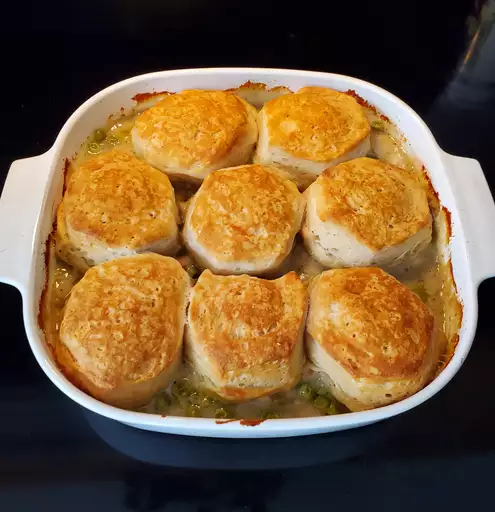

Chicken and Dumplings Casserole

Description
This chicken and dumplings casserole is comfort food at its best.
Dish may be made ahead of time. At this point, cool and store in the refrigerator or freezer.
When ready to use, bake at 350 degrees until slightly bubbly.
Top with biscuits. Cover and bake as instructed.
Ingredients
- 1 pound skinless, boneless chicken breasts, cut into small pieces
- 1 cup sliced carrot
- ½ cup sliced celery
- 1 cube chicken bouillon, or more to taste
- ⅓ cup butter
- ½ cup chopped onion
- 2 teaspoons minced garlic
- ⅓ cup all-purpose flour
- ½ teaspoon poultry seasoning
- ½ teaspoon dried basil
- ½ teaspoon dried thyme
- ¼ teaspoon ground black pepper
- 1 ¾ cups chicken broth
- ⅔ cup milk
- 1 cup frozen peas
- 1 (16.3 ounce) package refrigerated biscuit dough, separated